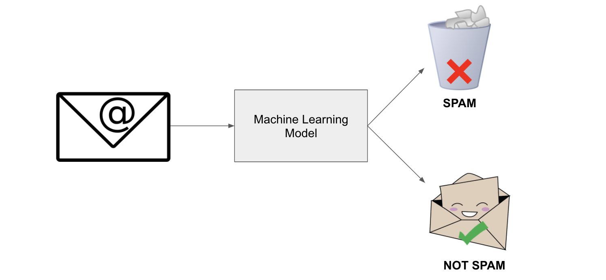

Descoberta do Conhecimento
Descoberta do conhecimento¶
Imagine que você tem uma montanha de dados na sua empresa e precisa transformá-los em decisões inteligentes. Como fazer isso de forma organizada e eficiente? É exatamente isso que vamos descobrir!
Vamos começar essa etapa do nosso curso explorando o ciclo de vida de dados em projetos de ciência de dados - um roteiro que todo cientista de dados segue para extrair conhecimento valioso dos dados.
Info
A descoberta do conhecimento é um conjunto estruturado de etapas que nos permite transformar grandes volumes de dados brutos em informações úteis e compreensíveis.
Introdução ao CRISP-DM¶
O CRISP-DM (Cross-Industry Standard Process for Data Mining) é uma ferramenta amplamente utilizada na indústria para projetos de ciência de dados.

Repare que o processo é cíclico - isso significa que podemos voltar a etapas anteriores conforme descobrimos novos insights!
Por que o CRISP-DM é representado como um processo cíclico e não linear?
1. Entendimento do Negócio¶
Tip
"Antes de resolver um problema, certifique-se de que está resolvendo o problema certo!"
O primeiro passo é como ser um detetive: você precisa investigar e entender completamente o "crime" (problema) que precisa resolver. Muitos projetos falham porque pulam esta etapa crucial!
Imagine que você trabalha em uma loja online e o gerente diz: "Queremos usar IA para aumentar as vendas". Parece claro, né? Mas não é! Você precisa descobrir: - As vendas estão baixas em quais produtos específicos? - O problema é atrair novos clientes ou fazer os existentes comprarem mais? - Qual é o orçamento disponível? - Em quanto tempo precisam ver resultados?
Perguntas-Chave desta Fase¶
- Qual é o problema de negócio que estamos tentando resolver?
- Como o sucesso será medido?
- Quais são as restrições de tempo, orçamento e recursos?
- Como os resultados serão implementados?
Um gerente pede para "usar machine learning para melhorar o atendimento ao cliente". O que você deveria perguntar primeiro?
Ferramentas e Técnicas¶
- Entrevistas e Workshops: Para coletar informações dos stakeholders e especialistas
- Mapas Mentais: Para visualizar o problema e suas possíveis soluções
- 5W2H: Framework para definir escopo (What, Why, Who, When, Where, How, How much)
2. Entendimento dos Dados¶
Agora que você sabe qual problema resolver, é hora de conhecer seus os dados! Esta fase é como explorar uma nova cidade: você precisa conhecer o território antes de planejar seu roteiro.
Tip
Dados ruins produzem modelos ruins, não importa quão sofisticado seja seu algoritmo! É como tentar fazer um bolo delicioso com ingredientes estragados.
Atividades Principais¶
- Coleta Inicial: Reunir todos os dados disponíveis (como fazer um inventário da sua cozinha)
- Descrição dos Dados: Documentar estrutura, formato e significado (criar um catálogo dos ingredientes)
- Exploração: Análise estatística descritiva inicial (provar os ingredientes)
- Verificação de Qualidade: Identificar problemas nos dados (verificar se estão frescos)
Ferramentas e Técnicas¶
- SQL e NoSQL: Para coleta de dados de bases estruturadas e não estruturadas
- Exploração de Dados: Usando pandas, matplotlib e seaborn para análise exploratória (EDA)
- Análise de Qualidade: Verificação de inconsistências, valores ausentes e outliers
- Profiling de Dados: Ferramentas automatizadas para gerar relatórios de qualidade
Durante a exploração inicial dos dados de vendas de uma empresa, você descobre que 30% dos registros têm valores ausentes na coluna "idade do cliente". Qual deve ser sua primeira ação?
3. Preparação dos Dados¶
Chegamos à fase que consome 70-80% do tempo de qualquer projeto de ciência de dados! É trabalhoso, mas essencial para o sucesso.
Realidade check: Se você acha que ciência de dados é só treinar modelos sofisticados, prepare-se para uma surpresa! A maior parte do tempo você será um "faxineiro de dados" - e isso é perfeitamente normal e necessário.
Atividades Detalhadas¶
- Limpeza: Remoção de duplicatas, correção de inconsistências
- Integração: Combinação de dados de múltiplas fontes (como juntar ingredientes de fornecedores diferentes)
- Transformação: Normalização, padronização, discretização
- Redução: Seleção de features e redução de dimensionalidade
- Construção: Feature engineering - criar novas variáveis que ajudem o modelo
Ferramentas e Técnicas¶
- Pandas e NumPy: Para manipulação e transformação de dados
- Scikit-learn: Para pré-processamento como normalização e codificação
- Feature Engineering: Criação de novas features (a parte mais criativa!)
- Pipelines: Automatização do processo de preparação
4. Modelagem¶
Aqui é onde a mágica acontece e você aplica algoritmos de machine learning aos seus dados preparados.
Tip
Importante: Não existe um algoritmo melhor para todos os problemas. É como escolher uma ferramenta, você usaria um martelo para apertar um parafuso?
Tipos de Problemas e Técnicas¶
Problemas Supervisionados (quando você tem as "respostas corretas" para treinar): - Classificação: Prever categorias (spam ou não spam, gato ou cachorro) - Árvores de Decisão, Random Forest, SVM, Redes Neurais - Regressão: Prever valores numéricos (preço de casa, vendas do próximo mês) - Regressão Linear, Ridge, Lasso, XGBoost
Problemas Não-Supervisionados (quando você explora sem "respostas" pré-definidas): - Clustering: Agrupar dados similares (segmentar clientes) - K-Means, Hierarchical Clustering, DBSCAN - Redução de Dimensionalidade: Simplificar dados complexos - PCA, t-SNE, UMAP

Você precisa prever se um e-mail é spam ou não. Que tipo de problema é este?
Ferramentas e Técnicas¶
- Scikit-learn: Para algoritmos tradicionais de machine learning
- TensorFlow/Keras e PyTorch: Para redes neurais profundas
- Cross-validation: Para avaliar modelos de forma robusta
- Grid Search: Para encontrar os melhores parâmetros
5. Avaliação¶
Tip
"Um modelo que parece bom no papel pode ser um desastre na vida real!"
É importante validar se o modelo realmente resolve o problema de negócio. Esta fase de avaliação vai além de olhar métricas técnicas.
Métricas de Avaliação por Tipo de Problema¶
Classificação: - Accuracy: Quantos acertei do total (cuidado com dados desbalanceados!) - Precision: Dos que previ como positivos, quantos realmente eram? - Recall: Dos positivos reais, quantos consegui encontrar? - F1-Score: Harmonia entre precision e recall
Regressão: - RMSE: Quão longe, em média, minhas previsões estão da realidade? - MAE: Erro médio absoluto (mais fácil de interpretar) - R²: Quanto da variação consigo explicar? (0-100%)
Você criou um modelo para detectar fraudes bancárias. O modelo tem 99% de accuracy, mas detecta apenas 10% das fraudes reais. Qual é o problema principal?
Ferramentas e Técnicas¶
- Métricas de Avaliação: Precision, recall, F1-score, AUC-ROC
- Confusion Matrix: Para análise visual detalhada
- ROC Curves: Para avaliar trade-offs entre sensibilidade e especificidade
- A/B Testing: Para validação no mundo real
- Análise de Bias: Verificação de vieses e fairness
6. Implantação¶
Tip
"Um modelo que não vai para produção é apenas um hobby caro!"
Aqui é onde seu modelo sai do laboratório e entra no mundo real.
Ferramentas e Técnicas¶
- Flask e FastAPI: Para criar APIs web
- Docker e Kubernetes: Para containerização e escalabilidade
- MLflow: Para versionar e rastrear modelos
- Monitoramento: Prometheus e Grafana para acompanhar performance
- CI/CD: Deploy automatizado e seguro
Seu modelo de recomendação está em produção há 3 meses e a performance começou a cair. Qual é a causa mais provável?
Outras estratégias¶
Embora o CRISP-DM seja o mais popular, existem outras metodologias interessantes:
- KDD (Knowledge Discovery in Databases) - O "avô" do CRISP-DM, mais acadêmico
- SEMMA (Sample, Explore, Modify, Model, Assess) - Criado pela SAS, focado nas ferramentas

- MLOps (Machine Learning Operations) - A evolução moderna, focada em automação e DevOps